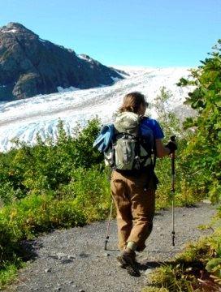

Basic Activities
Top 3 Basic Activities to Do
Visit the Space Needle, hike Rattlesnake Ledge at Snoqualmie Pass, or take a trip to the Seattle Public Library.
Grab your peeps, your cat, or your imaginary friend - because today is the day to do something amazing. With this website, you can plan your day according to any mood or whim imaginable. Feel like exercising? We have hiking. Feeling lazy? We know some good Netflix shows. Find your passion today, and go on an adventure. Or stay on your couch. We have that option too! Below, you will find the top few things to do is Seattle, read how to use our "Mood-Ivator," and learn about some extra cool things to do around the USA (for those of you who are feeling extra adventurous).
Visit the Space Needle, hike Rattlesnake Ledge at Snoqualmie Pass, or take a trip to the Seattle Public Library.
Above, we have "Mood-Ivator," a filter to help us (and you) know what you want to do today. Filter out all the "Wants" and "Don't wants" to see your personalized results. Click all the boxes that apply. We want to know if you want to be outside, inside, if you want to learn something, or if you want to evolve into a new species of couch potato.
Here are some things you could do outside of state. Browse the top 5 best road trips in Washington, Oregon, and Canada. Discover new places, go to a museum, or take a new class on basket weaving, or coding.